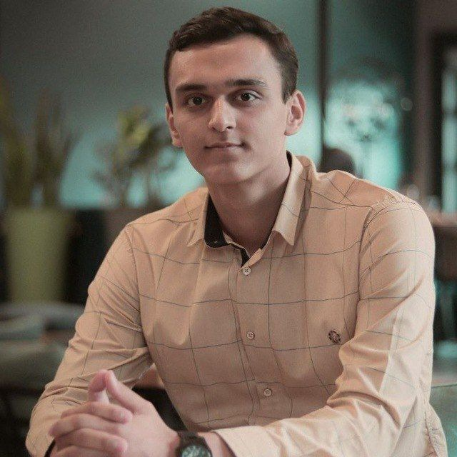

// About Me

I’m Hosein Shajari, a mechatronics student focused on embedded systems and backend development. I enjoy building systems where hardware meets software, and turning constraints into elegant solutions.
// Skills
- Embedded C / C++
- Embedded Linux
- Django & REST APIs
- Python & Automation
- Hardware–Software Integration
// Projects
Currently under construction. Expect embedded + backend hybrids, logging systems, and practical engineering experiments.
// Contact
Email: hoseinvsc@gmail.com